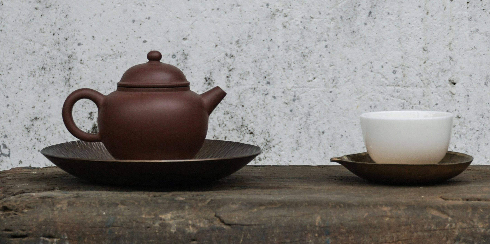

Tea is one of the most popular drinks in the world. Served warm, it's a soothing cup of comfort; poured over ice, it's a refreshing pick-me-up. The brew is steeped in cultural significance in many countries, a staple of relaxation, tranquility, hospitality, connection, and tradition.
Tea is the second most consumed drink after water. The time-honored tradition of tea drinking has been around for centuries and is still going strong today. There are many reasons why people love tea but one of the most important ones is that it is a source of comfort. In a world that is often chaotic and stressful, tea provides a moment of peace and relaxation. It is a simple pleasure that can be enjoyed alone or with friends.

Turkey consumes the most tea annually. A typical Turk consumes an average of 5 cups of tea per day, amounting to 1300 cups of tea per year. The tea market in Turkey was worth US$5549.5m in 2020.
Global tea production is led by China, with a significant margin over India, which ranks second. Kenya, Vietnam, and Sri Lanka round out the top five producers. In 2023, notable growth rates were observed in Bangladesh and Tanzania, while declines were seen in Iran and South Africa. Over the past five years, China and India have shown consistent growth, contributing to the overall positive trend in global tea production.
The global mate and tea export volume in 2023 was dominated by countries like Kenya, China, and India. Kenya led with 574 thousand metric tons, boosted by a year-on-year growth of 2.68%. China's exports grew by 1.18%, while India's saw a 1.37% increment. Sri Lanka's exports slightly contracted by 1.01%, while Argentina's remained relatively stable. Vietnam and Myanmar experienced notable growth rates of 4.46% and 4.56%, respectively. In contrast, countries like Iran and Austria faced significant declines of 22.88% and 12.94%, respectively.
In 2023, Pakistan led the global mate and tea import volume, followed by the United States and Russia. Noteworthy shifts included Pakistan's 1.33% growth and significant declines in the United States and Germany by -0.33% and -2.68%, respectively. Yemen showed a remarkable 5.64% increase, while Myanmar's imports surged by 8.45%. Conversely, countries like Hungary and Ghana saw major contractions at -12.94% and -100%, respectively. The average growth rate over the past five years highlights gradual yet steady changes in market dynamics.